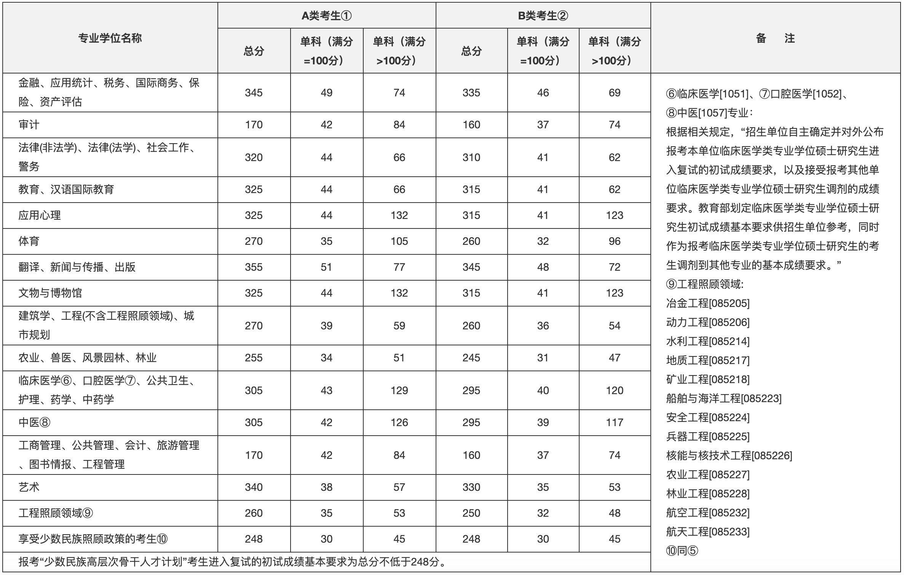
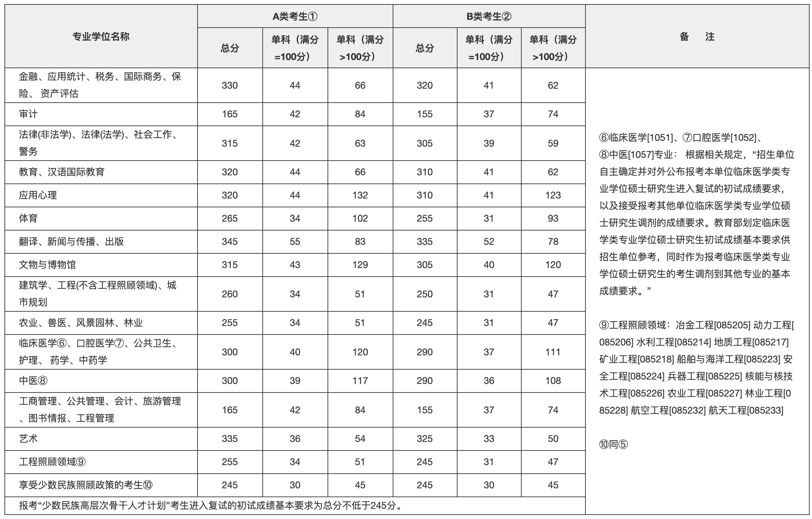
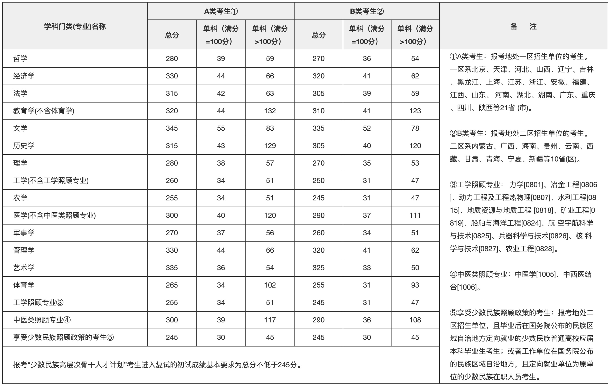
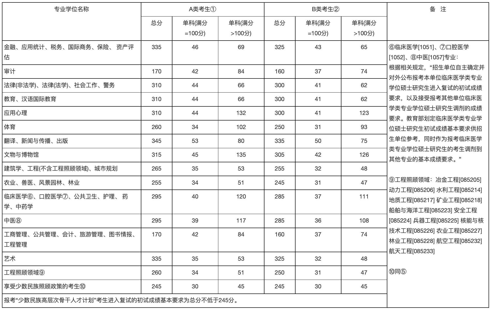
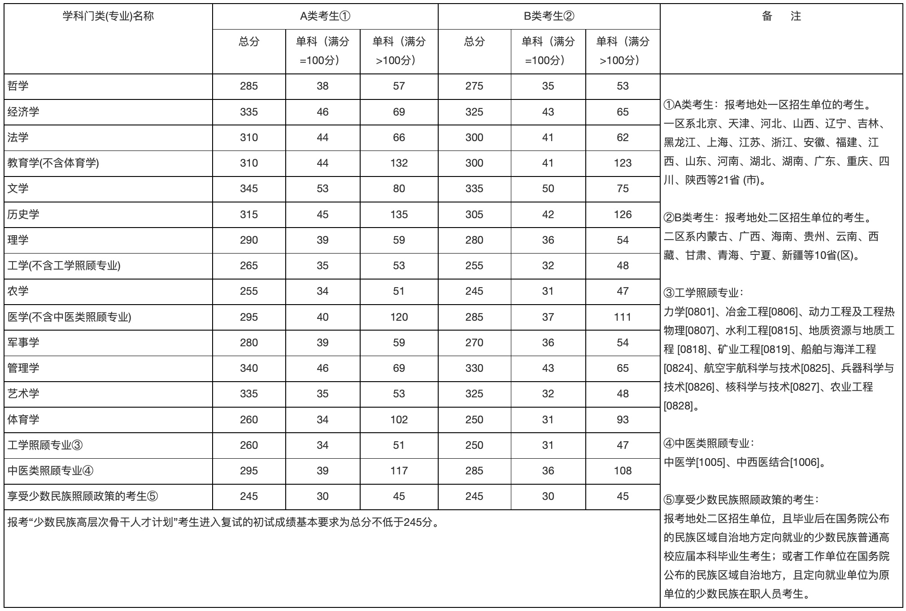
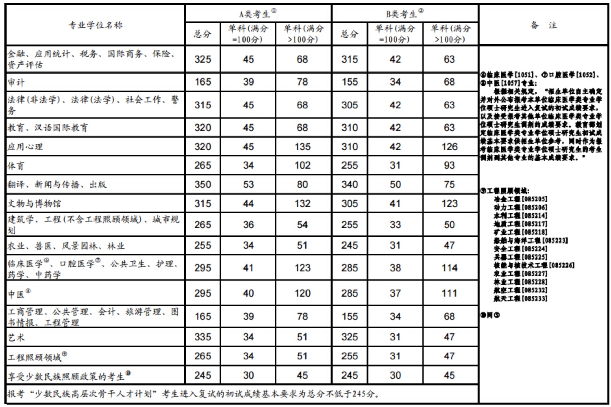

历年分数线
2021
2020
2019
2018
2017
2016
2021年全国硕士研究生招生考试考生进入复试的初试成绩基本要求(专业学位类)

2021年全国硕士研究生招生考试考生进入复试的初试成绩基本要求(学术学位类)

2020年全国硕士研究生招生考试考生进入复试的初试成绩基本要求(专业学位类)

2020年全国硕士研究生招生考试考生进入复试的初试成绩基本要求(学术学位类)

2019年全国硕士研究生招生考试考生进入复试的初试成绩基本要求(专业学位类)
2019年全国硕士研究生招生考试考生进入复试的初试成绩基本要求(学术学位类)

2018年全国硕士研究生招生考试考生进入复试的初试成绩基本要求(专业学位类)
2018年全国硕士研究生招生考试考生进入复试的初试成绩基本要求(学术学位类)
2017年全国硕士研究生招生考试考生进入复试的初试成绩基本要求(专业学位类)
2017年全国硕士研究生招生考试考生进入复试的初试成绩基本要求(学术学位类)
2016年全国硕士研究生招生考试考生进入复试的初试成绩基本要求(专业学位类)
2016年全国硕士研究生招生考试考生进入复试的初试成绩基本要求(学术学位类)

版权所有：中国教育在线